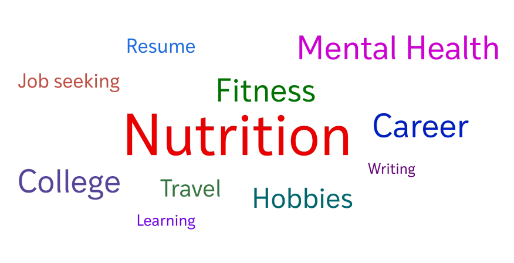
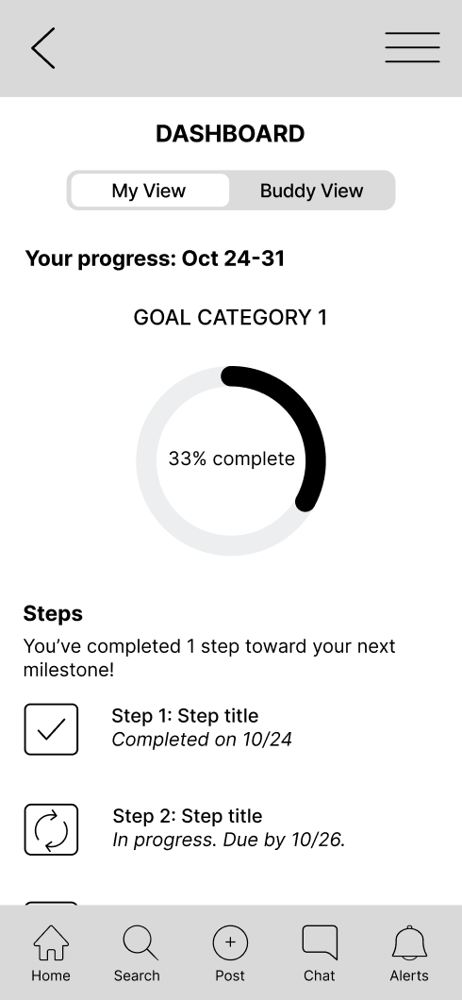
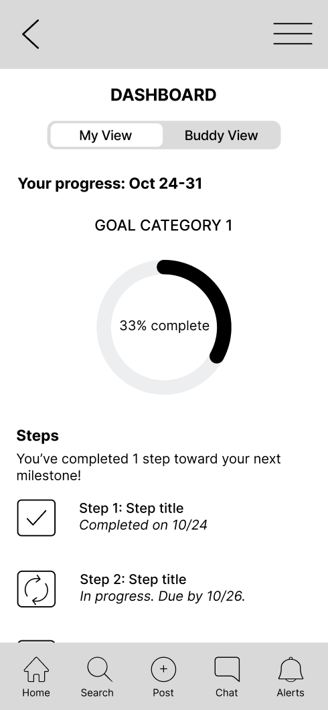

In today’s fast-paced world, it’s easy for personal goals to take a back seat to daily responsibilities. The lack of structured systems for accountability, clear progress tracking, and meaningful support can leave individuals feeling unmotivated and overwhelmed. Recognizing this need, I developed the concept and design for GoalPact, a digital platform aimed at helping users achieve their goals by integrating accountability partnerships, interactive progress visualization, and supportive communities. This project represents a conceptual exercise in UX design, focusing on research, wireframing, and the application of theoretical frameworks rather than development or prototyping.
Prior to designing the wireframes, I conducted a user research study with 28 participants to ensure the app addressed real user needs. The insights uncovered from this study directly informed my design process and ideation, helping shape features that align with user challenges.
Participants valued encouragement, shared tips/resources, and progress updates within goal-specific communities but expressed mixed feelings about public engagement.
All participants struggle to make progress toward their goals, and an alarming 85.8% of participants indicated that it impacts their mood and well-being.
Many participants expressed interest in forming accountability partnerships, emphasizing qualities like encouragement, shared interests, and regular check-ins. These insights highlight the importance of fostering meaningful, goal-oriented connections within the app.

Participants valued encouragement, shared tips/resources, and progress updates within goal-specific communities but expressed mixed feelings about public engagement.
Commonly used tools (e.g., Google Calendar, Notion) lacked interactivity and personalized support, underscoring the demand for a more integrated and intuitive platform.
Most participants preferred moderate structure when working toward goals, favoring clear guidelines but with flexibility for individual needs.
Participants emphasized the importance of recognizing milestones, with personal rewards and progress summaries being the most motivating.
Tools like reminders, progress visuals, and motivational quotes were frequently mentioned as desirable features to keep users engaged.
The research group consisted of a diverse range of participants, spanning different ages (18-55+), professional backgrounds, and personal goals. This diversity ensured comprehensive insights that shaped GoalPact’s inclusive design.
The early design process for GoalPact involved creating low- and mid-fidelity prototypes to explore potential solutions:
Initially, I planned to design only two wireframes: one for the Goal Pathway and one for the timeline. These sketches provided a foundation for visualizing the app's key features and focused on defining user flows and navigation.
During the mid-fidelity phase, additional ideas for features emerged beyond the original low-fidelity sketches of the Goal Pathway and timeline. These concepts were directly integrated into mid-fidelity prototypes, expanding functionality and exploring how research insights could translate into actionable features. The mid-fidelity prototypes refined layouts and added key elements like interactive milestones, buddy dashboards, and enhanced usability features that aligned with user needs.
 

In the high-fidelity phase, I refined the visual and textual elements to align with the platform’s identity. The UX writing process helped me explore a brand voice that was both encouraging and motivational, ensuring users felt supported as they navigated their journey. Additionally, I incorporated colors that reflected the branding and added images to enhance engagement and create a more intuitive experience. These wireframes are scrollable and some buttons are active.
Buddy timeline: Users can view posts or updates made by their accountability partners, which are referred to as “buddies.” Because GoalPact encourages users to focus on current partnerships, only active partnerships will show up here. However, by selecting the filter icon, users can choose to see prior accountability partners’ posts, if both users choose to remain connected.
Community timeline: Users can view posts from the community groups they are part of. By selecting the filter button, users can choose if they’d like to see posts from a specific community only. The community timeline will push content analyzed by an algorithm to ensure users see relevant content to their journey or preferences.
The Goal Pathway allows users to visualize their journey in a fun and engaging manner. Think of the yellow brick road from MGM’s The Wizard of Oz (1939). In this case, users unlock coloring of the path they’ve completed, while the rest remains in grayscale until they reach each goal point.
Step: The squares represents milestones. These are major achievements or significant points along the user’s journey. Reaching these unlocks motivational elements like encouraging users to reward themselves, an inspiring message, or a celebration animation, depending on their preferences.
Milestone: The yellow dot represents a step along the user’s journey to their milestone. These are smaller, incremental tasks or components that make up a whole milestone.
Star: Represents the final milestone.
Avatar: Users can select an avatar to represent themselves along the journey.
Present: At the end, users unlock their chosen celebration method.
Overview: Provides a concise, AI-generated summary of project’s current status, achievements, upcoming goals, and a motivational message. Paired with the visuals of seeing where they are on the journey, the overview tells them.
Customize: Users can customize the coloring of the different elements on the pathway, and the color of the background the path is placed over. Users can also edit the title of the project. Though the design isn’t complete, when users tap on a milestone or step, they will have the following options:
View details: A title and short description of the step or milestone provided by the user, the due date, and whether it is “in-progress”, “completed”, or “not started.” A design iteration being considered for usability testing is changing the color of the step circle to represent the three progress indicators listed above.
Mark as complete: Users can select this option in the pop-up, or they can hold down the step or milestone icon to mark as complete.
Results from my user research study indicated the top rewards or recognition users would prefer at the completion of their goal were a personal reward (treat themselves), a badge or achievement, or a progress summary. The user’s preference will be implemented into the present once they achieve the goal.
To ensure GoalPact matches users with optimal accountability partners, they will take a quiz to allow us to gauge their preferences.
Step 1, shown here, allows users to select the areas they would like to focus on. Not only will this allow us to match partners to those in similar goal areas (if they prefer that), but recommend them relevant groups.
The rest of the quiz will include the following:
Step 2: Communication and Interaction Preferences. Users can specify how and how often they prefer to communicate (text, video or voice).
Step 3: Motivation and Support Styles. Users can choose their preferred support style such as positive reinforcement, constructive feedback, or strict accountability.
Step 4: Personality and Cultural Preferences. These traits can allow us, if the user prefers, to match partners to those with compatible dynamics.
Step 5: Scheduling and Availability. Users outline their general availability. This can be edited at any time.
The design of GoalPact was heavily informed by Common Bond/Identity Theory and Amy Jo Kim's Nine Principles of Community Design. Common Bond Theory shaped the accountability partnership features, emphasizing close interpersonal connections through shared goals and consistent check-ins. Simultaneously, Common Identity Theory inspired the community feed, fostering a sense of belonging through shared challenges and collaborative progress. Amy Jo Kim's principles guided the app's structure, particularly through clear purpose, evolving user profiles, and gathering spaces like the buddy and community feeds. These frameworks ensured that GoalPact not only addressed user needs but also created a meaningful and supportive ecosystem for goal achievement.
To illustrate how GoalPact’s features address the challenges uncovered during research, the following user scenarios showcase how the platform fosters accountability, supports users’ goals, and builds meaningful connections through thoughtful design.
GoalPact offers a more comprehensive, interactive, and personalized experience.
Working on GoalPact allowed me to explore how user research and theoretical frameworks shape meaningful design. Insights from diverse participants, such as the need for accountability and motivational tools, guided key features like the Goal Pathway and dashboards. The iterative design process expanded my understanding of how features can holistically address user pain points, while UX writing and branding refined the experience to feel supportive and engaging. By applying frameworks like Common Bond/Identity Theory and Amy Jo Kim’s principles, I ensured the platform fostered both individual connections and a sense of community. This process deepened my skills in research-driven design and reinforced my passion for creating impactful user experiences.